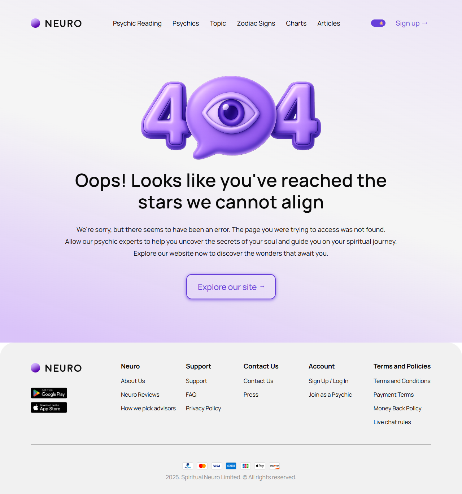
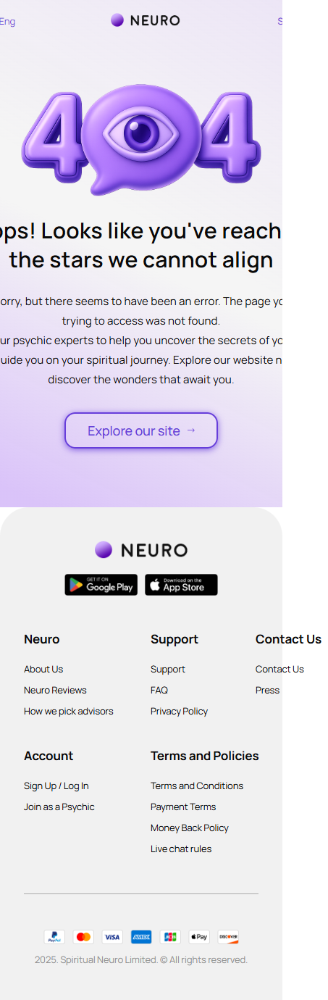

Страница не найдена
404.html
Вернуть пользователя к доступному разделу.
| Когда открывается | Неизвестный адрес |
|---|---|
| Данные | Корректный HTTP404; безопасные ссылки; текущая авторизация. |
| Сценарий | Главная/каталог → доступный маршрут без потери авторизации. |
| Переходы | Главная |
Общая и предметная логика. Снимки и подписи элементов — исходная редакция макета; поздние уточнения ТЗ имеют приоритет в своей области. Это не проверка текущего сайта.
Состояние 1280 · 1280 × 1370


Элементы и ожидаемые действия
| Элемент | Название в макете | Действие | Ожидаемый результат |
|---|---|---|---|
| E001 Скрыт в этом состоянии | Open menu | Открыть/закрыть соответствующее меню или панель. | Доступные пункты зависят от роли; Escape/Close возвращают фокус. Открытие меню не выполняет его команды. |
| E002 Скрыт в этом состоянии | Language: English | Выбрать доступный язык интерфейса. | Сохранить текущий маршрут и сущность; язык не означает автоматический допуск страны или перевод чужой переписки. |
| E003 Виден | Neuro home | Открыть адрес из исходника: home.html. | Сохранить авторизацию и переданный контекст. Backend-only маршрут связывает Игорь; открытие не выполняет денежное действие. |
| E004 Виден | Psychic Reading | Открыть адрес из исходника: psychic-reading.html. | Сохранить авторизацию и переданный контекст. Backend-only маршрут связывает Игорь; открытие не выполняет денежное действие. |
| E005 Виден | Psychics | Открыть адрес из исходника: all-psychic.html. | Сохранить авторизацию и переданный контекст. Backend-only маршрут связывает Игорь; открытие не выполняет денежное действие. |
| E006 Виден | Topic | Открыть адрес из исходника: home.html. | Сохранить авторизацию и переданный контекст. Backend-only маршрут связывает Игорь; открытие не выполняет денежное действие. |
| E007 Виден | Zodiac Signs | Открыть адрес из исходника: home.html. | Сохранить авторизацию и переданный контекст. Backend-only маршрут связывает Игорь; открытие не выполняет денежное действие. |
| E008 Виден | Charts | Открыть адрес из исходника: home.html. | Сохранить авторизацию и переданный контекст. Backend-only маршрут связывает Игорь; открытие не выполняет денежное действие. |
| E009 Виден | Articles | Открыть адрес из исходника: blog.html. | Сохранить авторизацию и переданный контекст. Backend-only маршрут связывает Игорь; открытие не выполняет денежное действие. |
| E010 Виден | Theme | Переключить существующую тему интерфейса. | Сохранить UI preference без изменения данных и бизнес-состояния. |
| E011 Виден | Sign up → | Открыть адрес из исходника: signup-create.html. | Сохранить авторизацию и переданный контекст. Backend-only маршрут связывает Игорь; открытие не выполняет денежное действие. |
| E012 Скрыт в этом состоянии | Psychic Reading | Открыть адрес из исходника: psychic-reading.html. | Сохранить авторизацию и переданный контекст. Backend-only маршрут связывает Игорь; открытие не выполняет денежное действие. |
| E013 Скрыт в этом состоянии | Psychics | Открыть адрес из исходника: all-psychic.html. | Сохранить авторизацию и переданный контекст. Backend-only маршрут связывает Игорь; открытие не выполняет денежное действие. |
| E014 Скрыт в этом состоянии | Topic | Открыть адрес из исходника: home.html. | Сохранить авторизацию и переданный контекст. Backend-only маршрут связывает Игорь; открытие не выполняет денежное действие. |
| E015 Скрыт в этом состоянии | Articles | Открыть адрес из исходника: blog.html. | Сохранить авторизацию и переданный контекст. Backend-only маршрут связывает Игорь; открытие не выполняет денежное действие. |
| E016 Виден | Explore our site → | Открыть адрес из исходника: home.html. | Сохранить авторизацию и переданный контекст. Backend-only маршрут связывает Игорь; открытие не выполняет денежное действие. |
| E017 Виден | Neuro home | Открыть адрес из исходника: home.html. | Сохранить авторизацию и переданный контекст. Backend-only маршрут связывает Игорь; открытие не выполняет денежное действие. |
| E018 Виден | Google Play | Открыть/воспроизвести разрешенный материал. | Загрузка/нет источника/ошибка различаются; закрытие останавливает воспроизведение. Это не звонок. |
| E019 Виден | App Store | Открыть адрес из исходника: https://www.apple.com/app-store/. | Сохранить авторизацию и переданный контекст. Backend-only маршрут связывает Игорь; открытие не выполняет денежное действие. |
| E020 Виден | About Us | Открыть адрес из исходника: home.html. | Сохранить авторизацию и переданный контекст. Backend-only маршрут связывает Игорь; открытие не выполняет денежное действие. |
| E021 Виден | Neuro Reviews | Открыть адрес из исходника: home.html. | Сохранить авторизацию и переданный контекст. Backend-only маршрут связывает Игорь; открытие не выполняет денежное действие. |
| E022 Виден | How we pick advisors | Открыть адрес из исходника: home.html. | Сохранить авторизацию и переданный контекст. Backend-only маршрут связывает Игорь; открытие не выполняет денежное действие. |
| E023 Виден | Support | Открыть адрес из исходника: home.html. | Сохранить авторизацию и переданный контекст. Backend-only маршрут связывает Игорь; открытие не выполняет денежное действие. |
| E024 Виден | FAQ | Открыть адрес из исходника: faq.html. | Сохранить авторизацию и переданный контекст. Backend-only маршрут связывает Игорь; открытие не выполняет денежное действие. |
| E025 Виден | Privacy Policy | Открыть адрес из исходника: privacy-policy.html. | Сохранить авторизацию и переданный контекст. Backend-only маршрут связывает Игорь; открытие не выполняет денежное действие. |
| E026 Виден | Contact Us | Открыть адрес из исходника: index.html#integration-routes. | Сохранить авторизацию и переданный контекст. Backend-only маршрут связывает Игорь; открытие не выполняет денежное действие. |
| E027 Виден | Press | Открыть адрес из исходника: home.html. | Сохранить авторизацию и переданный контекст. Backend-only маршрут связывает Игорь; открытие не выполняет денежное действие. |
| E028 Виден | Sign Up / Log In | Открыть адрес из исходника: signup-create.html. | Сохранить авторизацию и переданный контекст. Backend-only маршрут связывает Игорь; открытие не выполняет денежное действие. |
| E029 Виден | Join as a Psychic | Открыть адрес из исходника: home.html. | Сохранить авторизацию и переданный контекст. Backend-only маршрут связывает Игорь; открытие не выполняет денежное действие. |
| E030 Виден | Terms and Conditions | Открыть адрес из исходника: index.html#integration-routes. | Сохранить авторизацию и переданный контекст. Backend-only маршрут связывает Игорь; открытие не выполняет денежное действие. |
| E031 Виден | Payment Terms | Открыть адрес из исходника: index.html#integration-routes. | Сохранить авторизацию и переданный контекст. Backend-only маршрут связывает Игорь; открытие не выполняет денежное действие. |
| E032 Виден | Money Back Policy | Открыть адрес из исходника: home.html. | Сохранить авторизацию и переданный контекст. Backend-only маршрут связывает Игорь; открытие не выполняет денежное действие. |
| E033 Виден | Live chat rules | Открыть адрес из исходника: home.html. | Сохранить авторизацию и переданный контекст. Backend-only маршрут связывает Игорь; открытие не выполняет денежное действие. |
Состояние 390 · 453 × 1380


Элементы и ожидаемые действия
| Элемент | Название в макете | Действие | Ожидаемый результат |
|---|---|---|---|
| E001 Виден | Open menu | Открыть/закрыть соответствующее меню или панель. | Доступные пункты зависят от роли; Escape/Close возвращают фокус. Открытие меню не выполняет его команды. |
| E002 Виден | Language: English | Выбрать доступный язык интерфейса. | Сохранить текущий маршрут и сущность; язык не означает автоматический допуск страны или перевод чужой переписки. |
| E003 Виден | Neuro home | Открыть адрес из исходника: home.html. | Сохранить авторизацию и переданный контекст. Backend-only маршрут связывает Игорь; открытие не выполняет денежное действие. |
| E004 Скрыт в этом состоянии | Psychic Reading | Открыть адрес из исходника: psychic-reading.html. | Сохранить авторизацию и переданный контекст. Backend-only маршрут связывает Игорь; открытие не выполняет денежное действие. |
| E005 Скрыт в этом состоянии | Psychics | Открыть адрес из исходника: all-psychic.html. | Сохранить авторизацию и переданный контекст. Backend-only маршрут связывает Игорь; открытие не выполняет денежное действие. |
| E006 Скрыт в этом состоянии | Topic | Открыть адрес из исходника: home.html. | Сохранить авторизацию и переданный контекст. Backend-only маршрут связывает Игорь; открытие не выполняет денежное действие. |
| E007 Скрыт в этом состоянии | Zodiac Signs | Открыть адрес из исходника: home.html. | Сохранить авторизацию и переданный контекст. Backend-only маршрут связывает Игорь; открытие не выполняет денежное действие. |
| E008 Скрыт в этом состоянии | Charts | Открыть адрес из исходника: home.html. | Сохранить авторизацию и переданный контекст. Backend-only маршрут связывает Игорь; открытие не выполняет денежное действие. |
| E009 Скрыт в этом состоянии | Articles | Открыть адрес из исходника: blog.html. | Сохранить авторизацию и переданный контекст. Backend-only маршрут связывает Игорь; открытие не выполняет денежное действие. |
| E010 Скрыт в этом состоянии | Theme | Переключить существующую тему интерфейса. | Сохранить UI preference без изменения данных и бизнес-состояния. |
| E011 Виден | Sign up → | Открыть адрес из исходника: signup-create.html. | Сохранить авторизацию и переданный контекст. Backend-only маршрут связывает Игорь; открытие не выполняет денежное действие. |
| E012 Скрыт в этом состоянии | Psychic Reading | Открыть адрес из исходника: psychic-reading.html. | Сохранить авторизацию и переданный контекст. Backend-only маршрут связывает Игорь; открытие не выполняет денежное действие. |
| E013 Скрыт в этом состоянии | Psychics | Открыть адрес из исходника: all-psychic.html. | Сохранить авторизацию и переданный контекст. Backend-only маршрут связывает Игорь; открытие не выполняет денежное действие. |
| E014 Скрыт в этом состоянии | Topic | Открыть адрес из исходника: home.html. | Сохранить авторизацию и переданный контекст. Backend-only маршрут связывает Игорь; открытие не выполняет денежное действие. |
| E015 Скрыт в этом состоянии | Articles | Открыть адрес из исходника: blog.html. | Сохранить авторизацию и переданный контекст. Backend-only маршрут связывает Игорь; открытие не выполняет денежное действие. |
| E016 Виден | Explore our site → | Открыть адрес из исходника: home.html. | Сохранить авторизацию и переданный контекст. Backend-only маршрут связывает Игорь; открытие не выполняет денежное действие. |
| E017 Виден | Neuro home | Открыть адрес из исходника: home.html. | Сохранить авторизацию и переданный контекст. Backend-only маршрут связывает Игорь; открытие не выполняет денежное действие. |
| E018 Виден | Google Play | Открыть/воспроизвести разрешенный материал. | Загрузка/нет источника/ошибка различаются; закрытие останавливает воспроизведение. Это не звонок. |
| E019 Виден | App Store | Открыть адрес из исходника: https://www.apple.com/app-store/. | Сохранить авторизацию и переданный контекст. Backend-only маршрут связывает Игорь; открытие не выполняет денежное действие. |
| E020 Виден | About Us | Открыть адрес из исходника: home.html. | Сохранить авторизацию и переданный контекст. Backend-only маршрут связывает Игорь; открытие не выполняет денежное действие. |
| E021 Виден | Neuro Reviews | Открыть адрес из исходника: home.html. | Сохранить авторизацию и переданный контекст. Backend-only маршрут связывает Игорь; открытие не выполняет денежное действие. |
| E022 Виден | How we pick advisors | Открыть адрес из исходника: home.html. | Сохранить авторизацию и переданный контекст. Backend-only маршрут связывает Игорь; открытие не выполняет денежное действие. |
| E023 Виден | Support | Открыть адрес из исходника: home.html. | Сохранить авторизацию и переданный контекст. Backend-only маршрут связывает Игорь; открытие не выполняет денежное действие. |
| E024 Виден | FAQ | Открыть адрес из исходника: faq.html. | Сохранить авторизацию и переданный контекст. Backend-only маршрут связывает Игорь; открытие не выполняет денежное действие. |
| E025 Виден | Privacy Policy | Открыть адрес из исходника: privacy-policy.html. | Сохранить авторизацию и переданный контекст. Backend-only маршрут связывает Игорь; открытие не выполняет денежное действие. |
| E026 Виден | Contact Us | Открыть адрес из исходника: index.html#integration-routes. | Сохранить авторизацию и переданный контекст. Backend-only маршрут связывает Игорь; открытие не выполняет денежное действие. |
| E027 Виден | Press | Открыть адрес из исходника: home.html. | Сохранить авторизацию и переданный контекст. Backend-only маршрут связывает Игорь; открытие не выполняет денежное действие. |
| E028 Виден | Sign Up / Log In | Открыть адрес из исходника: signup-create.html. | Сохранить авторизацию и переданный контекст. Backend-only маршрут связывает Игорь; открытие не выполняет денежное действие. |
| E029 Виден | Join as a Psychic | Открыть адрес из исходника: home.html. | Сохранить авторизацию и переданный контекст. Backend-only маршрут связывает Игорь; открытие не выполняет денежное действие. |
| E030 Виден | Terms and Conditions | Открыть адрес из исходника: index.html#integration-routes. | Сохранить авторизацию и переданный контекст. Backend-only маршрут связывает Игорь; открытие не выполняет денежное действие. |
| E031 Виден | Payment Terms | Открыть адрес из исходника: index.html#integration-routes. | Сохранить авторизацию и переданный контекст. Backend-only маршрут связывает Игорь; открытие не выполняет денежное действие. |
| E032 Виден | Money Back Policy | Открыть адрес из исходника: home.html. | Сохранить авторизацию и переданный контекст. Backend-only маршрут связывает Игорь; открытие не выполняет денежное действие. |
| E033 Виден | Live chat rules | Открыть адрес из исходника: home.html. | Сохранить авторизацию и переданный контекст. Backend-only маршрут связывает Игорь; открытие не выполняет денежное действие. |